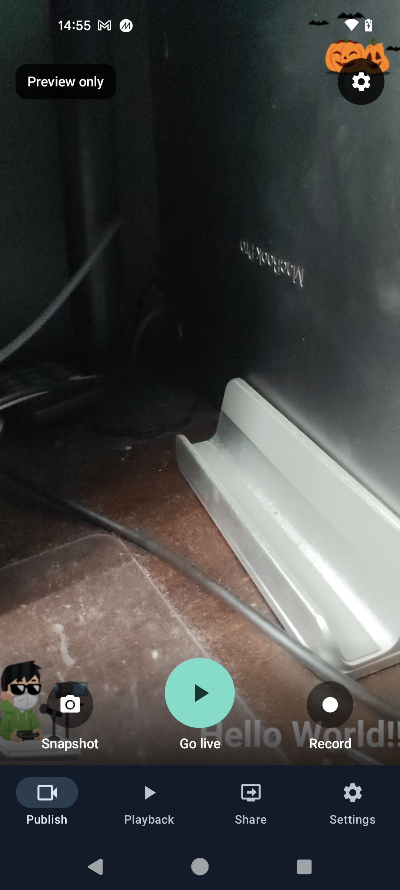
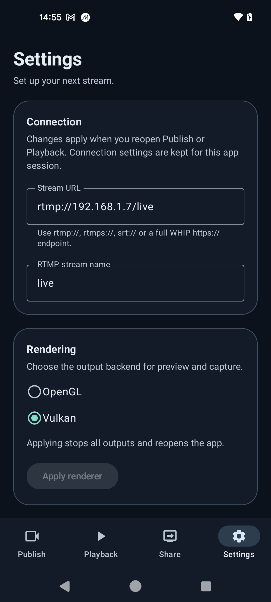
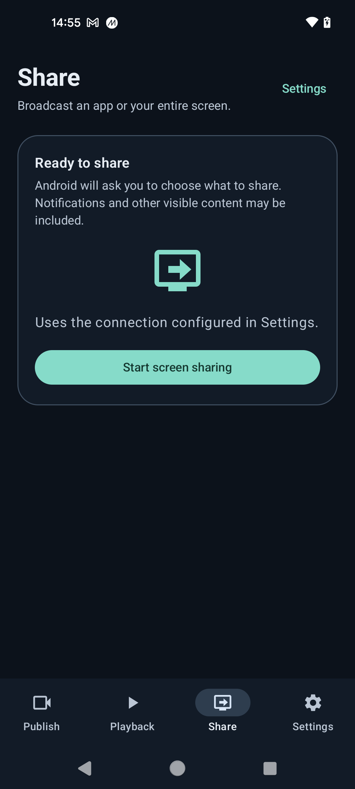

📡 HaishinKit for Android, iOS, macOS, tvOS and visionOS.

A Kotlin library for capturing, composing, recording, publishing, and playing camera and microphone streams on Android using RTMP/RTMPS, SRT, and WHIP/WHEP.
API reference · Releases · app/README.md
🎨 Features
-
RTMP/RTMPS publishing and playback, including H.264/AAC and Enhanced RTMP HEVC support.
-
Experimental SRT publishing and playback with MPEG-TS, H.264/H.265, AAC, and encryption.
-
Experimental WHIP publishing and WHEP playback with H.264/VP8/VP9 video and Opus over WebRTC.
-
A common
StreamSessioninterface for protocol-specific publishing and playback. -
Camera and microphone capture, multiple cameras, and streaming to multiple destinations.
-
Video compositions with text, images, and optional Lottie animations; preview and recording outputs.
-
Jetpack Compose integration and an optional experimental Vulkan output backend.
📦 Installation
Add JitPack alongside your existing repositories in settings.gradle.kts:
dependencyResolutionManagement {
repositories {
google()
mavenCentral()
maven { url = uri("https://jitpack.io") }
}
}Add the core library and your transport module in your app's build.gradle.kts:
dependencies {
val haishinkitVersion = "0.20.3"
implementation("com.github.HaishinKit.HaishinKit~kt:haishinkit:$haishinkitVersion")
implementation("com.github.HaishinKit.HaishinKit~kt:rtmp:$haishinkitVersion")
}Use HaishinKit~kt in JitPack coordinates. Keep all modules on the same version. The example uses the published 0.20.3 release; main is the development branch and may include changes absent from that release or the published API reference.
| Module | Minimum Android | Purpose |
|---|---|---|
haishinkit |
6.0 / API 23 | Required core: capture, composition, codecs, and recording |
rtmp |
6.0 / API 23 | RTMP/RTMPS transport |
srt |
6.0 / API 23 | Experimental SRT transport |
rtc |
6.0 / API 23 | Experimental WHIP/WHEP transport |
mcp |
8.0 / API 26 | Optional authenticated MCP server and application-owned tools (new; not in older releases) |
compose |
6.0 / API 23 | Jetpack Compose views |
lottie |
6.0 / API 23 | Lottie animations in compositions |
vulkan |
9.0 / API 28 | Experimental Vulkan output |
Add optional modules using the same coordinates, replacing rtmp with the module name. RTC audio publishing requires an Opus encoder, provided by Android 10+.
📚 Documentation
Use the Dokka API reference for media capture and composition, stream sessions, recording, and protocol APIs. The module guides are included in generated documentation:
-
haishinkit/module-docs.md
-
rtmp/module-docs.md
-
srt/module-docs.md
-
rtc/module-docs.md
-
mcp/module-docs.md
-
vulkan/module-docs.md
Source guides track main; consult the matching release tag when integrating a published version.
🐾 Examples
Publishing, settings and screen sharing in the Android sample (English, Pixel 5a):



The app/README.md demonstrates camera publishing, playback, recording, screen sharing, and screen composition. It requires Android 10 (API 29) or later, plus a streaming server and endpoints for network testing.
git clone --recurse-submodules https://github.com/HaishinKit/HaishinKit.kt.git
cd HaishinKit.ktOpen the repository in Android Studio and run the app configuration. See the app/README.md for setup, permissions, and protocol settings. When reporting a problem, check whether it also occurs in the sample app.
💖 Support
Technical support through Issues and Discussions is available to contributors, academic researchers, and sponsors. The $50/month sponsorship tier includes priority technical support.
🌏 Related projects
-
HaishinKit.swift — Apple platforms.
-
HaishinKit.dart — Flutter.
📜 License
LICENSE.md. The optional RTC module bundles libdatachannel (MPL-2.0) and other dependencies; see its rtc/src/main/assets/libdatachannel/NOTICE.
All modules:
Jetpack Compose integration for HaishinKit.
Core APIs for capturing, composing, encoding, playing, and recording media.
Render Lottie animations in video compositions with com.haishinkit.lottie.LottieScreen. Load an animation, add the object to a mixer's screen, and start animation playback.
HaishinKit MCP is an optional Android API 26+ library exposing application-approved composition tools through MCP Streamable HTTP. It uses the official MCP Kotlin SDK 0.8.4 and Ktor Netty 3.2.3. Neither dependency is added to the core media library. Netty uses API 26 method-handle APIs during initialization; only this optional module requires API 26. The core library retains API 23 support.
Android 6.0+ WHIP publishing and WHEP playback using libdatachannel, H.264/VP8/VP9 and Opus.
RTMP and RTMPS publishing and playback for HaishinKit.
Coroutine-based Android SRT connections and MPEG-TS publishing/playback.
Experimental native Vulkan rendering for HaishinKit on Android 9 (API 28) and later. Use this optional backend for screen composition, camera/decoder inputs, video effects, previews, recording, and encoded stream output. OpenGL is the default backend.